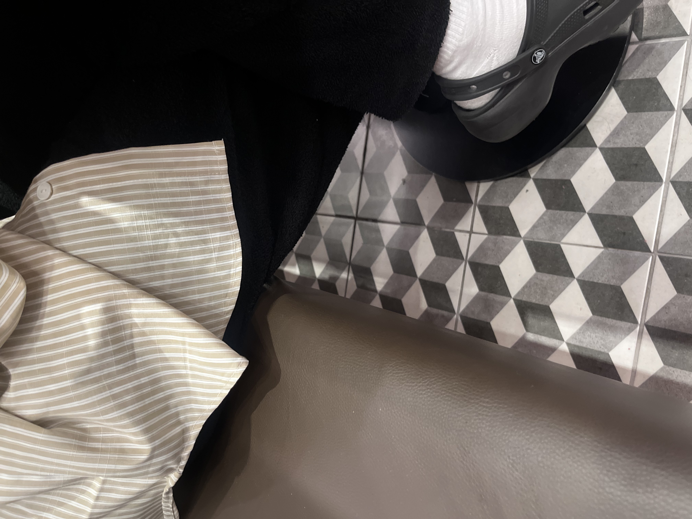
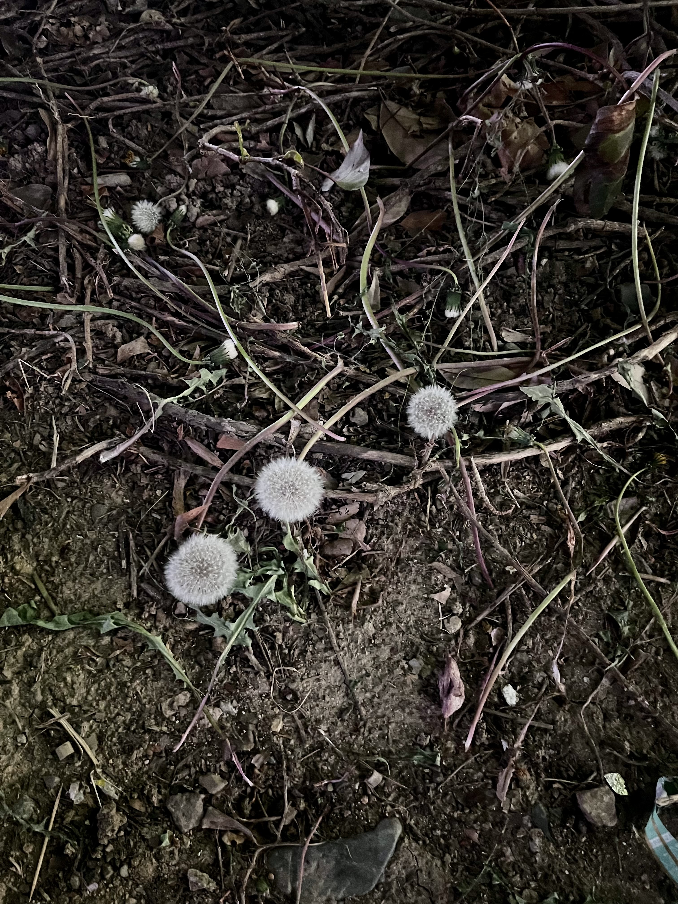
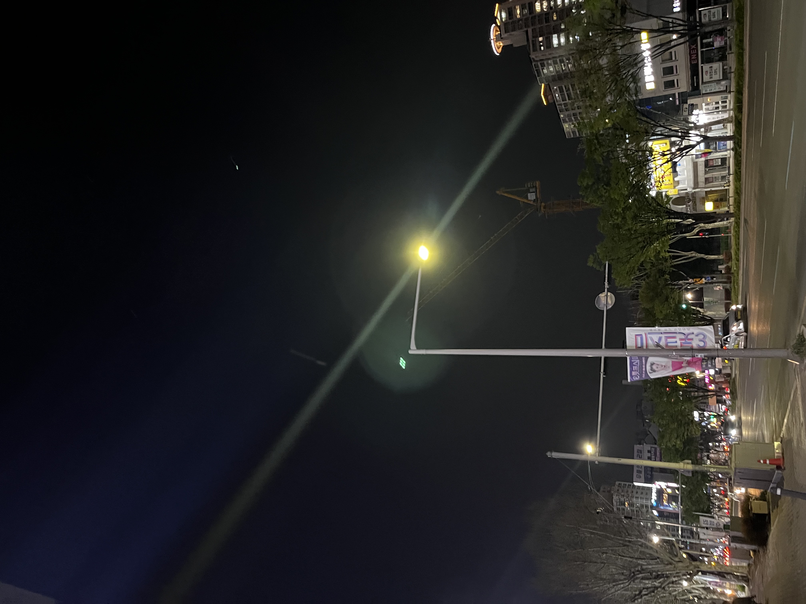
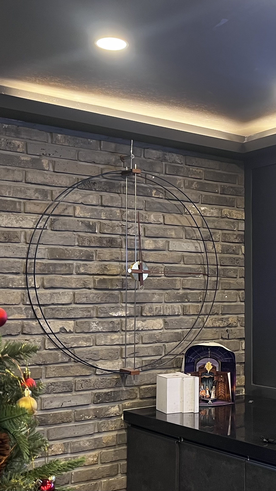
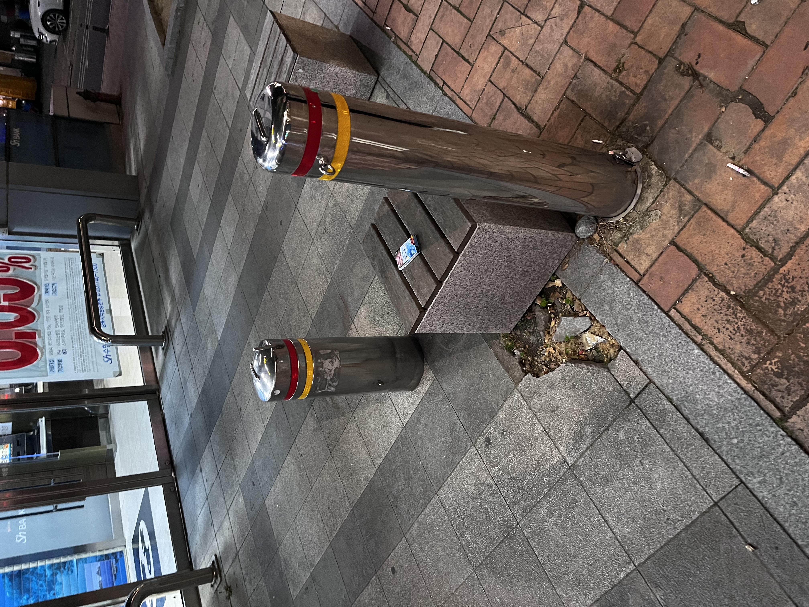
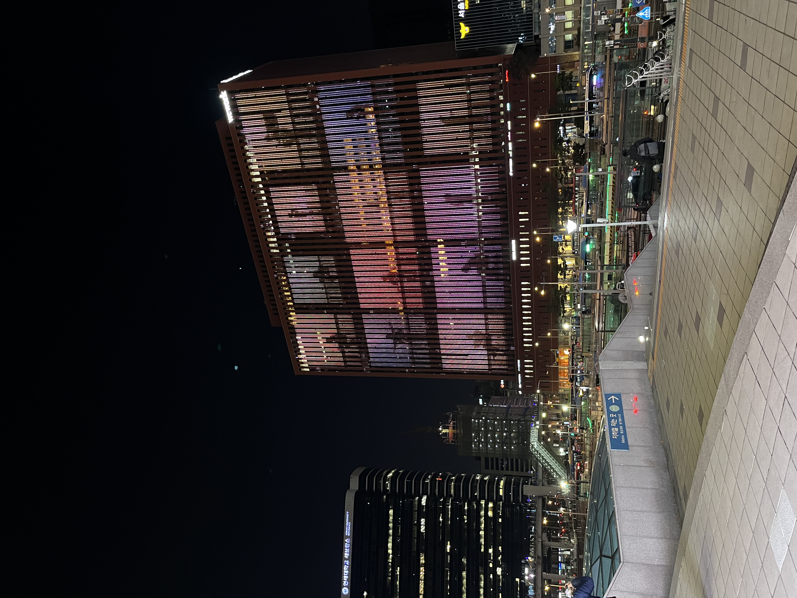
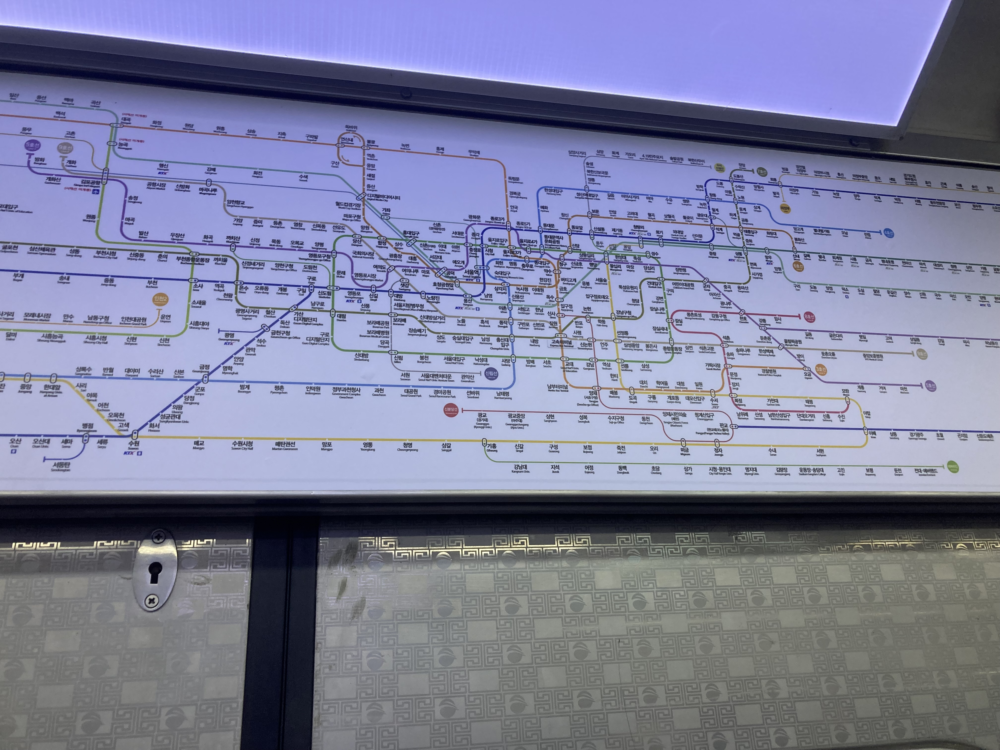
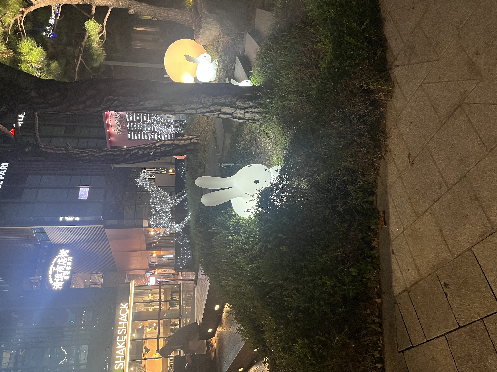
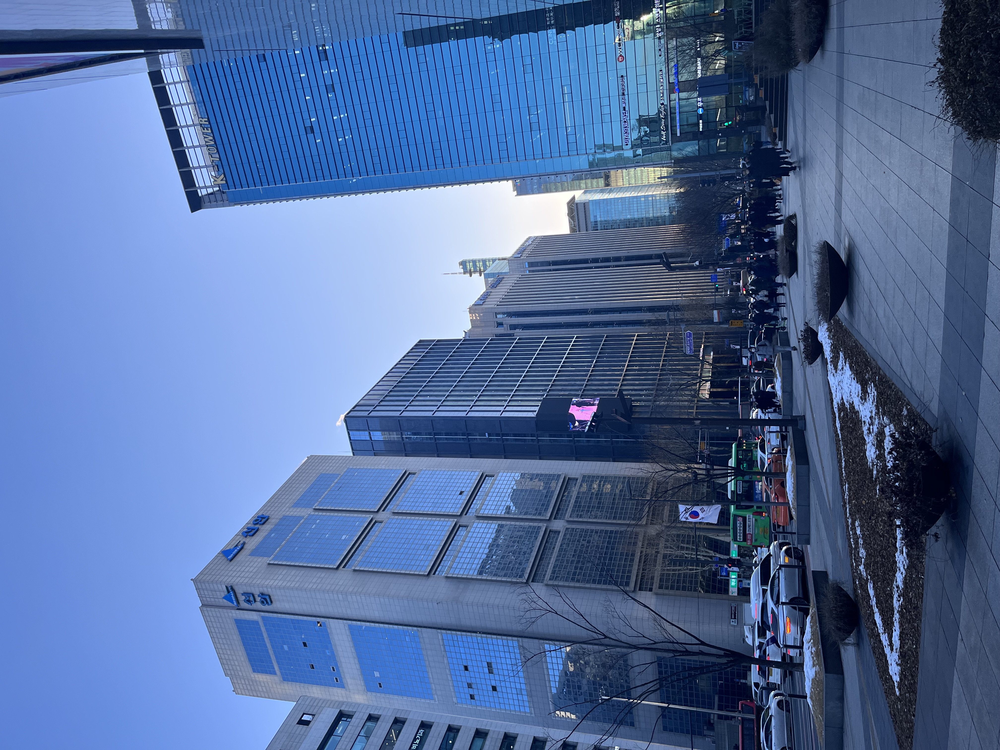

일상 속 패턴
카페에서 과제를 하다가 우연히 바닥을 봤는데 패턴 바닥을 발견했다. 마침 일러스트 수업에 패턴을 만드는 수업을 듣는데 그래서인지 눈에 잘 띄었다. 사진을 찍으려다 보니 옆에 앉은 언니 옷에도 줄무늬 패턴이 보였다. 일상 속에서 생각보다 우리는 많은 패턴을 이용하고 있다는 것을 알게 됐다. 그냥 테두리만 따져있는 사각형의 반복이 아닌 입체감을 표현함으로써 더욱 재밌는 패턴이지 아닐까라는 생각이 든다.
민들레
길을 걷다가 민들레를 발견해서 사진을 찍었다. 처음에는 단지 민들레가 이뻐서 찍었지만 찍으면서 보니깐 밟혀서 쓰러진 모습이였다.민들레는 굉장히 하얗고 밝은 색이기 때문에 주변이 만약 밝고 알록달록 했다면 잘 보이지 않는다. 오히려 짓밟히고 어두운 잔디밭과의 대비를 통해 민들레가 더 빛을 본다고 생각한다.비록 밟히긴 했지만 잔디밭에 누워있음으로써 더 눈에 띌 수 있게 된 것 같다.
가로등
과제를 하기 위해 살펴보았더니 가로등이 눈에 띄어서 찍었다. 사실 가로등은 흔히 우리 일상에서 굳이 의식하지 않는 물체 중 하나다. 어두운 밤거리를 비추기 위해 크고 긴 형태의 가로등이 굉장히 재밌는 디자인이라고 생각한다. 걷는 길에 방해가 되지 않게 그리 두껍지 않은 두께와 기역 자 모양으로 꺾여있는 모습이 유용하다고 생각한다. 가로등이 모여서 환한 빛을 만들어 내는 게 참 신기하면서 고맙다.
분홍꽃 사이의 하얀꽃

집 가는 길에 꽃이 이뻐서 보는데 중간에 다른 색이 끼어있는 게 이뻐서 찍었다. 우리가 입시 그림을 그릴 때도 중간에 포인트를 주고 싶은 곳은 다른 색으로 칠하는데 저 하얀 꽃도 주인공이지 아닐까라는 생각이 들었다. 분홍과 흰색의 색 조합도 이뻐서 더 호감이 간다. 누가 인위적으로 흰 꽃을 심은 건지 또 누가 심었는지 어떻게 이런 식으로 만들어졌는지 의문도 생겼다.
시계
저 사진 속 시계는 아르바이트하는 학원에 있는 시계이다. 보통 우리가 아는 시계 디자인과 많이 다른 모습의 시계이다. 보통 우리가 아는 시계는 커다랗게 숫자가 적혀있다. 하지만 이 시계는 숫자는 어디에도 없고 언뜻 보면 그냥 하나의 인테리어 소품이라고 생각할 만큼 디자인 틱한 시계이다. 물론 시간을 보기에는 조금 어려움이 있겠지만 시각적으로 재밌고 유니크한 디자인이라 소유욕이 생긴다.
주차 기둥
길을 걷아 주차 금지 기둥을 보는데 문득 의문이 생겼다. 이 사물이 주차 금지를 나타내기 위한 용도인 건 아는데 왜 노란색과 빨간색 띠가 둘러져 있는지 궁금해졌다. 만약 없었다면 어땠을까라는 생각도 든다. 차 안에 있는 사람이 만약 금속 기둥만 세워져있다면 이게 무슨 의도인지 주차와 관련된 건지 아닌지 알 수 없는데 노란색 빨간색 띠가 둘러져 있음으로써 그 의도를 빠르게 알아챌 수 있다고 생각한다.
led 건물
서울에 놀러 갔다가 찍은 사진이다. 아마 서울에 사는 사람들뿐만 아닌 놀러 가본 사람들은 다 알만한 장소이다. 서울역에서 바로 나오면 마주하는 건물이다. 이 건물은 건물 자체로도 굉장히 큰데 건물 외간이 led 조명이라는 게 더욱 놀랍다. 서울역 바로 앞에 위치해 마치 서울을 환영한다는 의미로도 느껴지며 다양한 예술가들이 작품을 전시할 수 있는 굉장히 유용성 있는 건물이다. 개인적으로 건축 디자인에 흥미가 있는 편인데 많은 도움이 된 건물이다.
지하철 노선도
서울에서 지하철을 타면서 찍은 노선도이다. 나뿐만이 아니라 지방에서 올라온 모든 사람들이 서울 와서 놀라는 것 중에 하나가 지하철 노선표라고 생각한다. 대구에선 3호선 밖에 없는 지하철이 서울엔 9호선 넘게 있으니 많이 어렵고 헷갈릴만하다. 하지만 호선마다 다른 색으로 디자인하고 최대한 간략한 선으로 만듦으로써 자칫하면 꼬일 수 있는 노선도를 잘 디자인했다고 생각한다.
토끼 모형
길을 걷다가 발견한 토끼 모양의 모형이다. 숲속에 있는 토끼를 표현하려 모형을 디자인해놓은 것이 귀여우면서 긴박하다. 모형 하나만 추가됐을 뿐인데 좀 더 생동감이 돌고 하나의 전 시작이 된 느낌이다. 공공디자인에 대해 잠시 수업을 들어본 적이 있는데 이 토끼 모형도 하나의 디자인이라고 생각한다. 평범할 수 있는 곳에 디자인을 추가함으로써 재밌는 길이 되었다.
서울의 큰 건물들
대구에서는 볼 수 없었던 서울의 풍경이다. 위에서도 말했듯이 건축물에 굉장히 관심이 많은데 서울에는 고층 빌딩들이 많아서 재밌는 구경을 했다. 최근에 지었는지 언제 지었는지 알 수 없지만 깨끗한 유리로 된 건물들이 웅장하면서도 아름다웠다. 통유리로 건물을 디자인함으로써 좀 더 깔끔하고 촌스럽지 않은 이미지를 만들어 내며 그 건물들이 주는 감동이 매우 컸다.